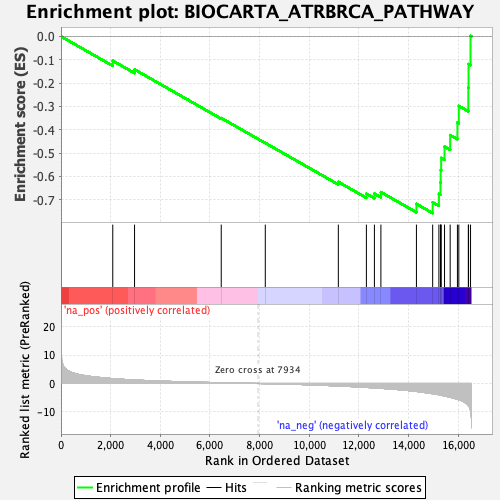
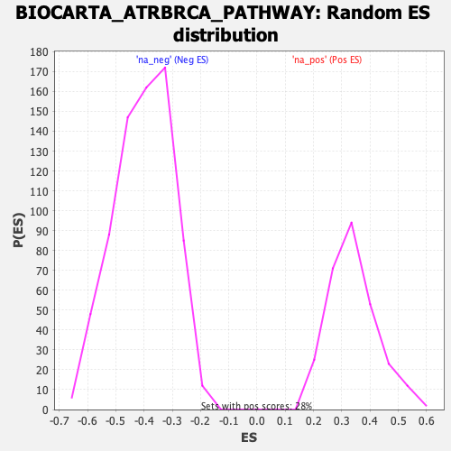

| | | Dataset | DE_genes2 |
| Phenotype | NoPhenotypeAvailable |
| Upregulated in class | na_neg |
| GeneSet | BIOCARTA_ATRBRCA_PATHWAY |
| Enrichment Score (ES) | -0.7573094 |
| Normalized Enrichment Score (NES) | -1.8802347 |
| Nominal p-value | 0.0 |
| FDR q-value | 0.005782541 |
| FWER p-Value | 0.008 |
Table: GSEA Results Summary

Fig 1: Enrichment plot: BIOCARTA_ATRBRCA_PATHWAY
Profile of the Running ES Score & Positions of GeneSet Members on the Rank Ordered List
| PROBE | GENE SYMBOL | GENE_TITLE | RANK IN GENE LIST | RANK METRIC SCORE | RUNNING ES | CORE ENRICHMENT | | 1 | RAD9A | | | 2085 | 1.693 | -0.1044 | No |
| 2 | TREX1 | | | 2962 | 1.212 | -0.1417 | No |
| 3 | TP53 | | | 6453 | 0.253 | -0.3498 | No |
| 4 | FANCF | | | 8227 | -0.046 | -0.4566 | No |
| 5 | RAD1 | | | 11169 | -0.868 | -0.6235 | No |
| 6 | HUS1 | | | 12299 | -1.374 | -0.6741 | No |
| 7 | FANCG | | | 12622 | -1.544 | -0.6736 | No |
| 8 | FANCC | | | 12883 | -1.704 | -0.6673 | No |
| 9 | FANCE | | | 14314 | -2.795 | -0.7178 | Yes |
| 10 | FANCA | | | 14968 | -3.594 | -0.7108 | Yes |
| 11 | ATM | | | 15219 | -3.945 | -0.6749 | Yes |
| 12 | RAD51 | | | 15283 | -4.088 | -0.6258 | Yes |
| 13 | RAD17 | | | 15291 | -4.101 | -0.5731 | Yes |
| 14 | CHEK2 | | | 15311 | -4.128 | -0.5208 | Yes |
| 15 | ATR | | | 15446 | -4.382 | -0.4722 | Yes |
| 16 | FANCD2 | | | 15673 | -4.860 | -0.4230 | Yes |
| 17 | CHEK1 | | | 15965 | -5.552 | -0.3688 | Yes |
| 18 | NBN | | | 16021 | -5.731 | -0.2979 | Yes |
| 19 | RAD50 | | | 16404 | -7.792 | -0.2202 | Yes |
| 20 | BRCA1 | | | 16413 | -7.892 | -0.1186 | Yes |
| 21 | BRCA2 | | | 16493 | -9.707 | 0.0023 | Yes |
Table: GSEA details [plain text format]

Fig 2: BIOCARTA_ATRBRCA_PATHWAY: Random ES distribution
Gene set null distribution of ES for BIOCARTA_ATRBRCA_PATHWAY